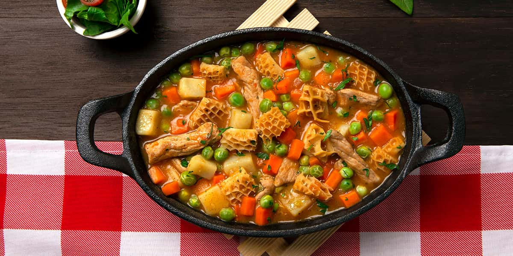

Mondongo

Ingredientes del Mondongo
- 2 libras de mondongo (panza de res) bien limpio
- 1 libra de costilla de res o cerdo (opcional, para más sabor)
- 2 mazorcas partidas en trozos
- 2 plátanos verdes picados
- 3 papas peladas y picadas
- 2 yucas medianas peladas y picadas
- 1 zanahoria en cubos
- 1 tomate maduro picado
- 1 cebolla cabezona (blanca o roja) picada
- 2 ramitas de cebolla larga picada
- 2 dientes de ajo triturados
- 1 pimentón rojo o verde picado
- 1 ramito de cilantro fresco
- 1 ramito de hierbabuena (opcional, para darle un sabor más fresco)
- Comino, color (achiote), sal y pimienta al gusto
- Agua suficiente para cocinar